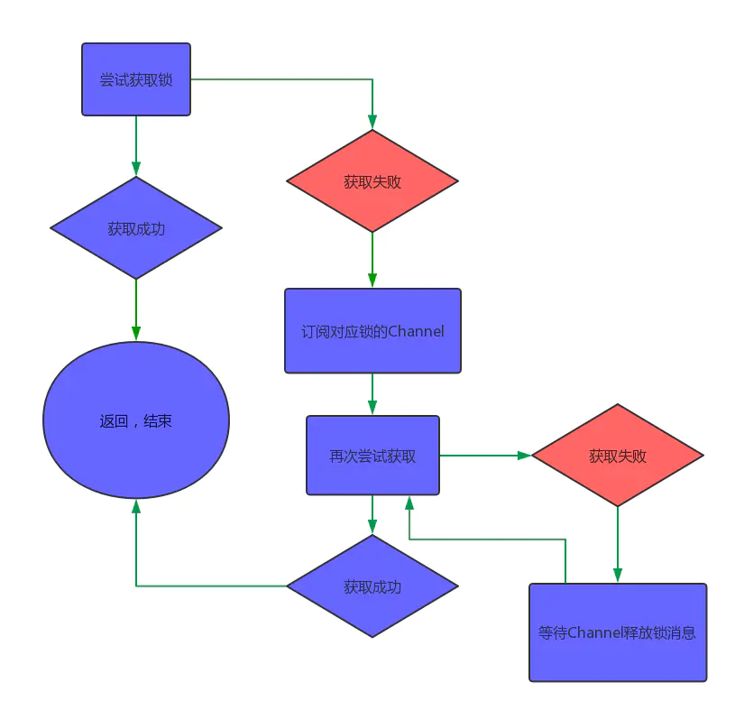
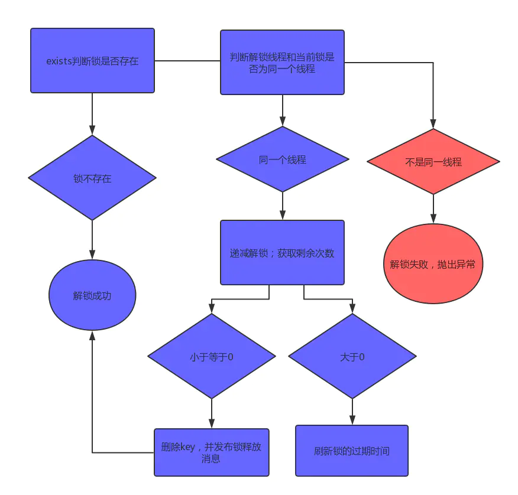

分布式锁简介
分布式锁，是一种思想，它的实现方式有很多。比如，我们将沙滩当做分布式锁的组件，那么它看起来应该是这样的：
加锁 解锁 锁超时
分布式锁的实现有很多，比如基于数据库、memcached、Redis、系统文件、zookeeper等。它们的核心的理念跟上面的过程大致相同。
在许多环境中不同进程必须以互斥方式使用共享资源进行操作时，分布式锁是一个非常有用的原语。此试图提供一种更规范的算法来实现Redis的分布式锁。我们提出了一种称为Redlock的算法，它实现了DLM（猜测是Distributed Lock Manager的缩写，分布式锁管理器），我们认为它比普通的单实例方法更安全。
锁的安全和活性保证 算法的三个核心特征（三大最低保证）：
Safety property （安全性）：互斥。确保在任何给定时刻下，只有一个客户端可以持有锁；Liveness property A （活性A）：无死锁。即使存在曾经锁定资源的客户端崩溃或者出现网络分区异常，确保锁总是能够成功获取；Liveness property B （活性B）：容错性。只要大多数Redis节点处于正常运行状态，客户端就可以获取和释放锁。
主从结构故障转移时的并发问题 文档中还指出了目前算法对于故障转移的实现还存在明显的竞态条件问题（描述的应该是Redis主从架构下的问题）：
客户端A获取Redis主节点中的锁（假设锁定的资源为X）
在Redis主节点把KEY同步到Redis从节点之前，Redis主节点崩溃
Redis从节点因为故障晋升为主节点
此时，客户端B获取资源X的锁成功，问题是资源X的锁在前面已经被客户端A获取过，这样就出现了并发问题。
单机下Redis实现锁 单个实例是我们将用于此处描述的分布式算法的基础。
锁的获取 下面的redis命令是获取锁的核心思想 —— 如果键不存在，则设置一个id值（此时相当于拿到了锁），并且为了保证上面所说的活性要求，还设置了键的过期时间。
1 SET resource_name my_random_value NX PX 30000
这实际上是setnx和setex的结合体，不过它是原子的。
如果较低版本的客户端中不支持这个命令，那就要使用lua脚本。
锁的释放 下面的lua脚本的含义是：
当键存在，并且键值正是当前线程的独属id时（也就是防止释放别的线程加的锁，这就是这个独属于加到锁的线程的id的作用）。
1 2 3 4 5 if redis.call("get" ,KEYS[1 ]) == ARGV[1 ] then return redis.call("del" ,KEYS[1 ]) else return 0 end
使用Jedis实现”丐版“Redis锁 注意下面的代码只能算是对redis加锁的原理予以初步的实践，远远达不到高性能、高可靠。
1 2 3 4 5 6 7 8 9 10 11 12 13 14 15 16 17 18 19 20 21 22 23 24 25 26 27 28 29 30 31 32 33 34 35 36 37 38 39 40 41 42 43 44 45 46 47 48 49 50 51 52 53 54 55 56 57 58 59 60 61 62 63 64 65 66 67 68 69 70 71 72 73 74 75 76 77 78 79 80 81 82 83 84 85 86 87 88 89 90 91 92 93 94 95 96 97 98 99 100 101 102 103 104 105 106 107 108 public class MyRedisLock implements Lock { private static final JedisPool jedisPool = new JedisPool ("localhost" ); private static final long EXPIRE_TIME_OUT = 1000 ; private static final SetParams params = SetParams.setParams().nx().px(EXPIRE_TIME_OUT); private final ThreadLocal<String> lockedId = new ThreadLocal <>(); private final String lockName; private MyRedisLock (String lockName) { this .lockName = lockName; } public static MyRedisLock getLock (String lockName) { return new MyRedisLock (lockName); } @SneakyThrows @Override public void lock () { String id = UUID.randomUUID().toString(); lockedId.set(id); try (Jedis jedis = jedisPool.getResource()) { for (; ; ) { String statusCode = jedis.set(lockName, id, params); if ("OK" .equals(statusCode)) { return ; } Thread.sleep(100 ); } } } @Override public void unlock () { try (Jedis jedis = jedisPool.getResource()) { String script = "if redis.call('get',KEYS[1]) == ARGV[1] then" + " return redis.call('del',KEYS[1]) " + "else" + " return 0 " + "end" ; String id = lockedId.get(); jedis.eval(script, Collections.singletonList(lockName), Collections.singletonList(id)).toString(); } } @Override public void lockInterruptibly () throws InterruptedException { } @Override public boolean tryLock () { return false ; } @Override public boolean tryLock (long time, TimeUnit unit) throws InterruptedException { return false ; } @Override public Condition newCondition () { return null ; } public static void main (String[] args) { MyRedisLock lock = MyRedisLock.getLock("lock1" ); long l = System.currentTimeMillis(); final int N = 10000 ; MyInteger integer = new MyInteger (N); CountDownLatch countDownLatch = new CountDownLatch (N); ExecutorService pool = Executors.newFixedThreadPool(10 ); for (int i = 0 ; i < N; i++) { pool.submit(() -> { lock.lock(); try { integer.decr(); } finally { lock.unlock(); } countDownLatch.countDown(); }); } try { countDownLatch.await(); } catch (InterruptedException e) { e.printStackTrace(); } System.out.println("end : " + integer.getX()); long r = System.currentTimeMillis(); System.out.println("耗时 " + (r - l) + " ms" ); } }
上述算法的主要缺点：
忙等（busy-waiting）的问题，消耗CPU资源；
只适用于单机；
不可重入
没有限制等待获取的锁的超时时间
不能做到在等待锁的时候响应中断
Redisson实现分布式锁 Redisson 是架设在Redis 基础上的一个Java驻内存数据网格（In-Memory Data Grid）。
相对于Jedis而言，Redisson是一个更高级的客户端。
它里面实现了各种分布式锁（本文只介绍和使用简单的）。
使用Redisson中的锁 maven依赖
1 2 3 4 5 <dependency > <groupId > org.redisson</groupId > <artifactId > redisson</artifactId > <version > 3.16.4</version > </dependency >
简单使用 lock
1 2 3 4 5 6 7 8 9 10 11 12 13 14 15 16 Config config = new Config (); config.useSingleServer().setAddress("redis://127.0.0.1:6379" ); config.useSingleServer().setPassword("redis1234" ); final RedissonClient client = Redisson.create(config); RLock lock = client.getLock("lock1" ); lock.lock(); try { }finally { lock.unlock(); }
Redisson中RLock的实现特点 Redisson中RLock的实现是基本参照了Redis的red lock算法进行实现，不过在原始的red lock算法下进行了改良，主要包括下面的特性：
互斥
无死锁
可重入，类似于ReentrantLock，同一个线程可以重复获取同一个资源的锁（一般使用计数器实现），锁的重入特性一般情况下有利于提高资源的利用率
续期 ，这个是一个比较前卫解决思路，也就是如果一个客户端对资源X永久锁定，那么并不是直接对KEY生存周期设置为-1，而是通过一个守护线程每隔固定周期延长KEY的过期时间 ，这样就能实现在守护线程不被杀掉的前提下，避免客户端崩溃导致锁无法释放长期占用资源的问题 锁状态变更订阅 ，依赖于org.redisson.pubsub.LockPubSub，用于订阅和通知锁释放事件数据类型选用了HASH，配合Lua脚本完成多个命令的原子性
RLock的类图
RedissonLock就是RLock的直接实现，也是分布式锁实现的核心类，从源码中看到Redisson.getLock()就是直接实例化RedissonLock。
RedissonLock的类继承图
加锁整体流程
下面的代码是版本3.16.4中的，其他版本有点差别：
构造锁 1 2 3 4 5 6 7 8 9 10 11 public RedissonLock (CommandAsyncExecutor commandExecutor, String name) { super (commandExecutor, name); this .commandExecutor = commandExecutor; this .id = commandExecutor.getConnectionManager().getId(); this .internalLockLeaseTime = commandExecutor. getConnectionManager().getCfg().getLockWatchdogTimeout(); this .entryName = id + ":" + name; }
lockWatchdogTimeout参数只有在没有使用leaseTimeout参数定义的成功获取到锁的场景（简单来说就是不设置时限的加锁）下生效，lockWatchdogTimeout周期内不进行续期，那么锁就会过期释放lockWatchdogTimeout就会执行一次续期任务，每次通过pexpire把KEY的存活周期延长lockWatchdogTimeout），lockWatchdogTimeout的默认值为30000，也就是30秒。
这里先列举一下RedissonLock中获取名称的方法，以便后面分析这些名称作为K-V结构的KEY时候使用：
id：由配置实例化时候实例化的UUID实例生成，从源码上分析每个连接方式的Redisson实例有唯一的UUID，ConnectionManager初始化的时候会调用UUID id = UUID.randomUUID()，笔者认为可以理解为Redisson实例在某个应用程序进程中的唯一标识，毕竟一般情况下，一个应用程序应该只会应用一种Redisson的连接方式getEntryName()：返回的是UUID + : + $KEY，例如559cc9df-bad8-4f6c-86a4-ffa51b7f1c36:resource:xgetName()：返回的是$KEY，例如resource:xgetChannelName()：返回的是redisson_lock__channel:{$KEY}，例如redisson_lock__channel:{resource:x}getLockName(long threadId)：返回的是UUID + : + $threadId，例如559cc9df-bad8-4f6c-86a4-ffa51b7f1c36:1
加锁 1 2 3 4 5 6 7 8 9 10 11 12 13 14 15 16 17 18 19 20 21 22 23 24 25 26 27 28 29 30 31 32 33 34 35 36 37 38 39 40 41 42 43 44 45 46 47 48 49 50 51 52 53 54 55 56 57 58 59 60 61 62 public RLock getLock (String name) { return new RedissonLock (commandExecutor, name); } private void lock (long leaseTime, TimeUnit unit, boolean interruptibly) throws InterruptedException { long threadId = Thread.currentThread().getId(); Long ttl = tryAcquire(-1 , leaseTime, unit, threadId); if (ttl == null ) { return ; } RFuture<RedissonLockEntry> future = subscribe(threadId); if (interruptibly) { commandExecutor.syncSubscriptionInterrupted(future); } else { commandExecutor.syncSubscription(future); } try { while (true ) { ttl = tryAcquire(-1 , leaseTime, unit, threadId); if (ttl == null ) { break ; } if (ttl >= 0 ) { try { future.getNow().getLatch().tryAcquire(ttl, TimeUnit.MILLISECONDS); } catch (InterruptedException e) { if (interruptibly) { throw e; } future.getNow().getLatch().tryAcquire(ttl, TimeUnit.MILLISECONDS); } } else { if (interruptibly) { future.getNow().getLatch().acquire(); } else { future.getNow().getLatch().acquireUninterruptibly(); } } } } finally { unsubscribe(future, threadId); } }
如上代码，就是加锁的全过程。先调用tryAcquire来获取锁，如果返回值ttl为空，则证明加锁成功，返回；如果不为空，则证明加锁失败。这时候，它会订阅这个锁的Channel，等待锁释放的消息，然后重新尝试获取锁。流程如下：

获取锁的过程是怎样的呢？接下来就要看tryAcquire方法。在这里，它有两种处理方式，一种是带有过期时间的锁，一种是不带过期时间的锁。
获取互斥状态 1 2 3 4 5 6 7 8 9 10 11 12 13 14 15 16 17 18 19 20 21 22 23 24 25 26 27 28 29 30 31 32 33 34 35 36 37 38 39 private Long tryAcquire (long waitTime, long leaseTime, TimeUnit unit, long threadId) { return get(tryAcquireAsync(waitTime, leaseTime, unit, threadId)); } private <T> RFuture<Long> tryAcquireAsync (long waitTime, long leaseTime, TimeUnit unit, long threadId) { RFuture<Long> ttlRemainingFuture; if (leaseTime != -1 ) { ttlRemainingFuture = tryLockInnerAsync(waitTime, leaseTime, unit, threadId, RedisCommands.EVAL_LONG); } else { ttlRemainingFuture = tryLockInnerAsync(waitTime, internalLockLeaseTime, TimeUnit.MILLISECONDS, threadId, RedisCommands.EVAL_LONG); } ttlRemainingFuture.onComplete((ttlRemaining, e) -> { if (e != null ) { return ; } if (ttlRemaining == null ) { if (leaseTime != -1 ) { internalLockLeaseTime = unit.toMillis(leaseTime); } else { scheduleExpirationRenewal(threadId); } } }); return ttlRemainingFuture; }
底层加锁逻辑 1 2 3 4 5 6 7 8 9 10 11 12 13 14 15 16 17 18 19 20 <T> RFuture<T> tryLockInnerAsync (long waitTime, long leaseTime, TimeUnit unit, long threadId, RedisStrictCommand<T> command) { return evalWriteAsync(getRawName(), LongCodec.INSTANCE, command, "if (redis.call('exists', KEYS[1]) == 0) then " + "redis.call('hincrby', KEYS[1], ARGV[2], 1); " + "redis.call('pexpire', KEYS[1], ARGV[1]); " + "return nil; " + "end; " + "if (redis.call('hexists', KEYS[1], ARGV[2]) == 1) then " + "redis.call('hincrby', KEYS[1], ARGV[2], 1); " + "redis.call('pexpire', KEYS[1], ARGV[1]); " + "return nil; " + "end; " + "return redis.call('pttl', KEYS[1]);" , Collections.singletonList(getRawName(), unit.toMillis(leaseTime), getLockName(threadId)); }
这段LUA代码看起来并不复杂，有三个判断：
通过exists判断，如果锁不存在，则设置值和过期时间，加锁成功 通过hexists判断，如果锁已存在，并且锁的是当前线程，则证明是重入锁，加锁成功 如果锁已存在，但锁的不是当前线程，则证明有其他线程持有锁。返回当前锁的过期时间，加锁失败
最后再概括一下Redisson中实现red lock算法使用的HASH数据类型：
KEY代表的就是资源或者锁，创建、存在性判断，延长生存周期和删除操作总是针对KEY进行的 FIELD代表的是锁名称lockName()，但是其实它由Redisson连接管理器实例的初始化UUID拼接客户端线程ID组成，严格来说应该是获取锁的客户端线程唯一标识；VALUE代表的是客户端线程对于锁的持有量。
解锁整体流程 解锁 1 2 3 4 5 6 7 8 9 10 11 12 13 14 15 16 17 18 19 20 21 22 23 24 25 public RFuture<Void> unlockAsync (long threadId) { RPromise<Void> result = new RedissonPromise <>(); RFuture<Boolean> future = unlockInnerAsync(threadId); future.onComplete((opStatus, e) -> { cancelExpirationRenewal(threadId); if (e != null ) { result.tryFailure(e); return ; } if (opStatus == null ) { IllegalMonitorStateException cause = new IllegalMonitorStateException ("attempt to unlock lock, not locked by current thread by node id: " + id + " thread-id: " + threadId); result.tryFailure(cause); return ; } result.trySuccess(null ); }); return result; }
解锁的底层逻辑 核心还是lua脚本实现的原子性
1 2 3 4 5 6 7 8 9 10 11 12 13 14 15 16 17 18 19 20 21 22 23 24 25 26 protected RFuture<Boolean> unlockInnerAsync (long threadId) { return evalWriteAsync(getRawName(), LongCodec.INSTANCE, RedisCommands.EVAL_BOOLEAN, "if (redis.call('hexists', KEYS[1], ARGV[3]) == 0) then " + "return nil;" + "end; " + "local counter = redis.call('hincrby', KEYS[1], ARGV[3], -1); " + "if (counter > 0) then " + "redis.call('pexpire', KEYS[1], ARGV[2]); " + "return 0; " + "else " + "redis.call('del', KEYS[1]); " + "redis.call('publish', KEYS[2], ARGV[1]); " + "return 1; " + "end; " + "return nil;" , Arrays.asList(getRawName(), getChannelName()), LockPubSub.UNLOCK_MESSAGE, internalLockLeaseTime, getLockName(threadId)); }
如果解锁的线程和当前锁的线程不是同一个，解锁失败，抛出异常 ‘’
通过hincrby递减1，先释放一次锁。
若剩余次数还大于0，则证明当前锁是重入锁，刷新过期时间；
若剩余次数小于0，删除key并发布锁释放的消息，解锁成功

Redisson的锁总结 Redisson中的red lock实现，应用到下面的核心技术：
合理应用Redis的基本数据类型HASH
Redis的订阅发布Lua脚本的原子性Netty中的Promise实现Netty中的时间轮HashedWheelTimer和对应的定时任务(HashedWheel)TimeoutSemaphore进行带期限、永久或者可中断的阻塞以及唤醒，替代CountDownLatch中的无等待期限阻塞
上面的核心技术相对合理地应用，才能实现一个高效而且容错能力相对比较高的分布式锁方案，但是从目前来看，Redisson仍未解决red lock算法中的故障转移缺陷，笔者认为这个有可能是Redis实现分布式锁方案的一个底层缺陷，此方案在Redis单实例中是相对完善 ，一旦应用在Redis集群（普通主从、哨兵或者Cluster），有几率会出现前文提到的节点角色切换导致多个不同客户端获取到同一个资源对应的锁的问题。暂时无解。
但值得注意的是，上面的两种实现方式都是针对单机Redis实例而进行的。如果我们有多个Redis实例，请参阅Redlock算法 。该算法的具体内容，请参考http://redis.cn/topics/distlock.html
冷饭新炒：理解Redisson中分布式锁的实现
Distributed locks with Redis
分布式锁的进化过程